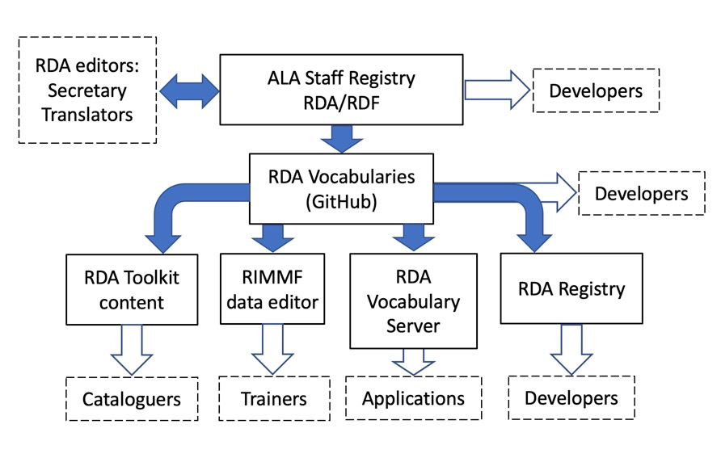

About the RDA Registry and vocabularies
RDA Reference: Data flow and maintenance
Background
General information about RDA Reference
ALA Staff Registry
RDA Reference data are stored in the ALA Staff Registry in Resource Description Framework (RDF).
The data are exported in multiple RDF formats, or serializations, to a GitHub open file repository with version control named RDA Vocabularies. Each export is a cumulative snapshot of the ALA Staff Registry data. Specific snapshots are designated as releases and given a semantic version number.
RDA Vocabularies (GitHub)
GitHub makes all releases and snapshots available for download, so applications can freeze or roll-back the data.
GitHub also makes all release and change notes available, along with automatic change comparison documentation.
GitHub offers an open active issue management system, used by RDA developers to raise queries, notify errors, and make suggestions for improvement.
RDA Registry
The RDA Registry provides links to download the individual element sets and value vocabularies in the current release of RDA Vocabularies.
The Registry offers additional documentation and tools to RDA developers. These include examples of RDA linked data and machine-actionable maps for transforming RDA data for use by non-RDA applications.
The RDA Registry also provides updated data to the RDA Vocabulary Server whenever a new release is published.
RDA Vocabulary Server
The Vocabulary Server provides a de-referencing service for RDA IRIs used in linked data, serving RDF serializations of the vocabularies in response to requests from applications.
The Server runs several services that provide language-specific extractions from the 'all-languages' vocabulary serializations available from the RDA Registry, based on specific requests for one or more languages.
Services also extract individual Elements and Concepts/Values from the broader element sets and value vocabularies in order to provide RDF representations of specific IRIs.
RDA Toolkit
Element references, broader and narrower element navigation, element browse, vocabulary encoding schemes, and the glossary in RDA Toolkit is based entirely on RDA Reference data.
The RDF/XML serialization available in the current release of RDA Vocabularies is processed with a transform script to extract the relevant data and format it in DITA XML for the Toolkit Content Management System.
RIMMF
The RDA data editor RIMMF3 (RDA in Many Metadata Formats) uses RDA Vocabularies data to keep up-to-date with RDA Toolkit.
RIMMF3 provides active links from its RDA data input forms to the instructions in RDA Toolkit.
Data maintenance
The ALA Staff Registry allows data to be updated under password control through a batch file import facility within an administrator interface.
Single Element and Concept updates
Updates to single elements and concepts are made through a private content management system which allows the RSC Technical Team Liaison and the RSC Secretary to update individual Elements and Concepts/Values, including additions, amendments, and deletions.
Batch updates
The ALA Staff Registry has a data import facility that allows for the updating of one or more element sets or value vocabularies. The facility requires both a password and authorization. The data are imported as csv files.
The ALA Staff Registry rejects malformed data.
The batch update procedure is also used for translations of RDA Reference.
Data flow
Data flows from the ALA Staff Registry to the RDA Vocabularies GitHub repository as snapshots. The RDA Vocabularies files are openly available.
The primary users of the RDA Vocabularies files are:
- Element reference for RDA elements in RDA Toolkit
- Broader and narrower elements navigation in RDA Toolkit
- Element browse in RDA Toolkit
- Vocabulary encoding schemes in RDA Toolkit
- Glossary in RDA Toolkit
- RDA Registry
- RDA Vocabulary Server
- RIMMF
